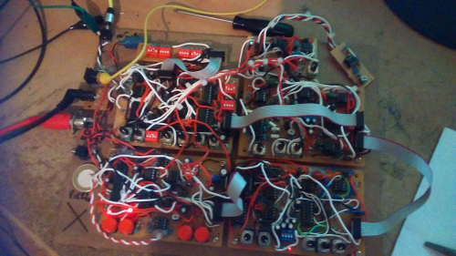
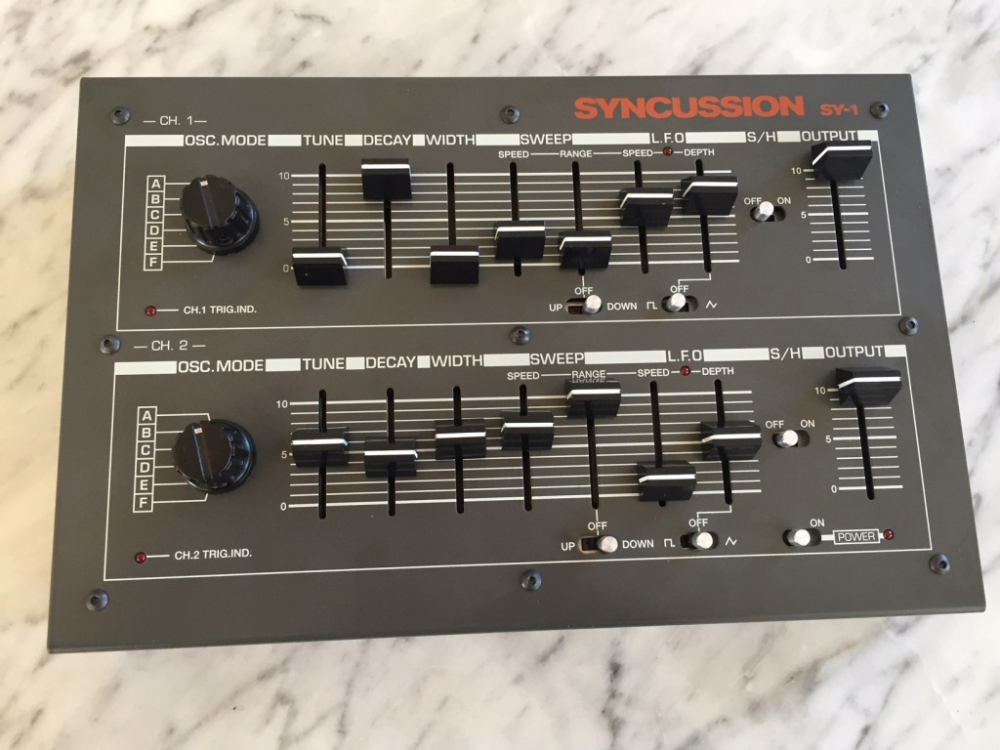
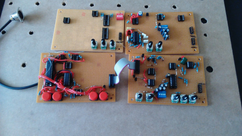
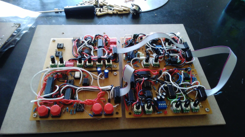

DRUM SYNTH
A drum synth project commissioned for someone in Honk Kong.  The idea was to make a modernised but not a copy of the drum module "syncussion". The project needed to stay "analog" as much as possible for all the signal path. Amicrocontroller is present to make all the for the voice.  what it is shown is the proof of concept, the stage that comfirn or deny the all idea, before going into PCBs. Not really a clever idea at the time as all the wire introduces noises and weird behavior.   The all thing was really an analog synth designed toward percussion role. The VCO had an envelope linked to it, the filter had the three traditional outputs (BP,LP,HP), there was a lfo modulation linkable to the VCA/VCO/VCF. The first envelope (the VCO envelope) had an atternuver
{kind=link}
{kind=link}
{kind=link}
{kind=link}
while the second had an interesting mode which combined a low random voltage with the envelope creating a "glitched envelope". This last mode wasn't very suited for percussion type of sound, but interesting for more wacky-hippie sound
Many additional features were added into the microcontroller and controlled by MIDI message. These fonctions were: probability gate, random sequencer, random pattern sequencer and others that I can't remember. Most were derived from idea developed from the synthi biscuit. Not only that, the microcontroller were also here to convert midi note to CV for the VCOs and manage the switching of the LFO waveforms. It also allowed the synth to be trigger but midi note (only gate information triggered the synth) it took a large amount of time to get working, many things were to be fixed, changed or modified. Also the result was tending more toward randomish synth than pure drum synth (that was also a wish to not create only a drum synth). The modulation source could have been done in sofware and outputed via PWM or 8bit DAC withtout being an issue and avoiding such complex circuitry. The VCO could also be made in digital, the all thing could have been made in digital !! But there's that fetishm about "analog" that most people have where I'm more interested in unseen, unheard and unused idea that digital can offer.
SCHEMATIC